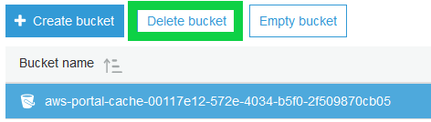
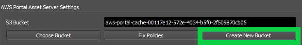
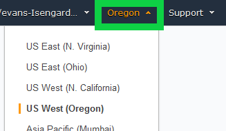
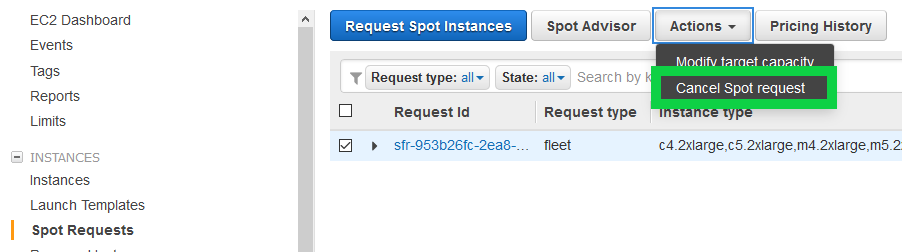
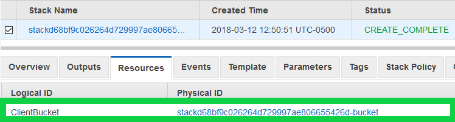
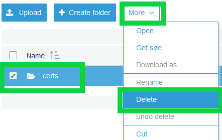
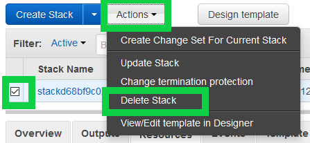

Note
While AWS Portal can enable cloud rendering in Deadline 10, AWS Deadline Cloud is a newer offering that has been built specifically for the cloud. It is a fully managed service that does not require installation or maintenance of infrastructure (e.g., repository, database, or license server). Worker fleet auto-scaling, asset synching, and licensing are all managed natively within AWS by Deadline Cloud. See here for more information on Deadline Cloud and its capabilities.
Switching AWS Accounts¶
Before Switching Accounts¶
Before you switch to a different AWS account, it is strongly recommended that you stop all spot fleets and infrastructures. If you do not do this, the spot fleets and infrastructures will continue to run in your old account and charges will apply.
Creating A New S3 Bucket¶
After signing into the new account you will need to create a new S3 bucket in the new account. It is recommended that if the old account is no longer going to be used for AWS Portal that you delete the S3 bucket that was used for the AWS Portal asset transfer system. If you do not do this, charges may apply for the storage used by this bucket. To do this:
Log into the AWS Console under the old account.
Expand the “All services” section and under “Storage” click the “S3” link.
Select the bucket that was used by the asset transfer system from the list.
Click “Delete Bucket”.
If the bucket is not empty, you will be prompted to type the name of the bucket before you can delete it.
Press confirm.
To create a new bucket in the new AWS account you will need to click the “New Bucket” button in the AWS Portal Settings dialog.

Once the bucket has been created, if the Asset Server is currently running, you will need to restart the Asset Server. On Windows, you can do this by opening Task Manager (press Ctrl + Shift + Esc), going to the “Services” tab, right clicking on “AWSPortalAssetServer” and selecting “Restart”.

On linux this can be done by running the command sudo service awsportalassetservershellscript restart.
Note that restarting the service must be done on the machine the Asset Server is running on.
If the Asset Server is not currently installed or you intend to reinstall it, you will need to create the new
bucket before you run install the Asset Server, or run the “Remove Orphaned AWS Entities” procedure as explained
in the next section.
Manually Stopping Infrastructure and Spot Fleets¶
Cleaning Up The Database¶
If for whatever reason you no longer have access to the old AWS Account and need to remove Spot Fleets or infrastructures associated with this account from the Deadline Database, you can do this by opening the AWS Portal Settings dialog and clicking on the “Advanced” tab and pressing the “Remove Orphaned AWS Entities” button.

You will be prompted to type in your AWS Account Id to confirm that you wish to do this before proceeding. This will remove any spot fleets, infrastructures, and S3 buckets not owned by the account you are currently signed in from the Deadline database. It will not stop or delete these entities in AWS itself. If any spot fleets, infrastructures, or S3 buckets are not deleted from the old AWS account charges will apply.
Stopping Spot Fleets¶
From the AWS console:
Switch your region to the region that your spot fleet was created in by clicking the region drop down in the upper right-hand corner and selecting the correct region.
Expand the “All services” section and under “Compute” click on “EC2”.
In the left side-bar, click on “Spot Requests”.
Select the spot fleet you wish to stop.
Click the “Actions” button and then “Cancel Spot Request”.

Stopping Infrastructures¶
From the AWS console:
Switch your region to the region that your infrastructure was created in by clicking the region drop down in the upper right-hand corner and selecting the correct region.
Ensure that you have stopped all spot fleet requests associated with the infrastructure (see previous section).
Expand the “All services” section and under “Management Tools” click on “CloudFormation”
Select the “Stack” associated with the infrastructure you wish to remove.
Click on the “Resources” tab and click the link in the “Physical ID” column in the row where “ClientBucket” is the “Logical ID”.
Select the “certs” directory (and any other directories that may be in the bucket)
Under the “More” drop-down select “Delete”
Close the “S3 Management Console” tab to get back to the CloudFormation console.
Ensure the stack for the infrastructure you wish to delete is still selected then click the “Actions” button and “Delete Stack”
Press the “Yes, Delete” button and wait for the stack to finish deleting.